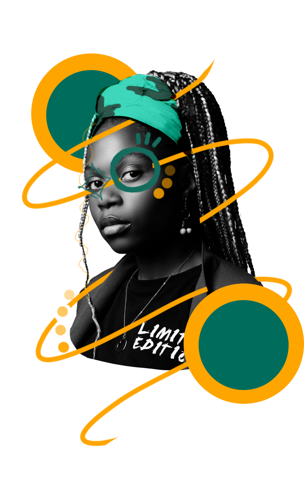
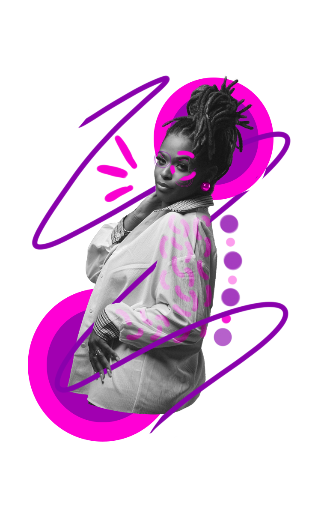

Una experta en el arte de las trenzas tradicionales, Zulú fusiona técnicas ancestrales con estilos modernos. Su trabajo destaca por su habilidad para crear patrones complejos y simbólicos que honran la cultura africana y reflejan la personalidad de cada cliente.
Un poco de su trabajo
Araña
Cornrows
Fulani
Centro internacional, Calle 10 30a

Amara
Con una visión espiritual del trenzado, Amara considera cada sesión una experiencia de conexión y sanación. Sus trenzas son más que peinados: son una expresión de identidad y empoderamiento, hechas con paciencia y dedicación, cuidando cada detalle del proceso.
Un poco de su trabajo
Fulani
Araña
Cornrows
Parque de la 93, Calle 93a #13-01

Kelly
Conocida por sus diseños innovadores, Kelly es una tejedora que mezcla la moda contemporánea con los patrones tradicionales. Su habilidad para experimentar con colores y texturas hace que cada creación sea única, destacando siempre el estilo personal de sus clientes.